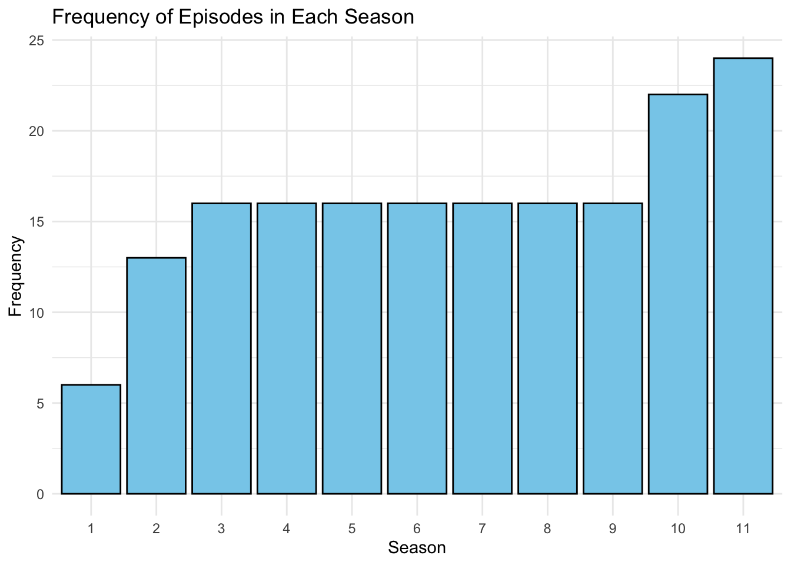

Rows: 177
Columns: 8
$ season <dbl> 1, 1, 1, 1, 1, 1, 2, 2, 2, 2, 2, 2, 2, 2, 2, 2, …
$ episode_num_in_season <int> 1, 2, 3, 4, 5, 6, 1, 2, 3, 4, 5, 6, 7, 8, 9, 10,…
$ episode_num_overall <int> 1, 2, 3, 4, 5, 6, 7, 8, 9, 10, 11, 12, 13, 14, 1…
$ title <chr> "Days Gone Bye", "Guts", "Tell It to the Frogs",…
$ directed_by <chr> "Frank Darabont", "Michelle MacLaren", "Gwyneth …
$ written_by <chr> "Teleplay by: Frank Darabont", "Frank Darabont",…
$ original_air_date <chr> "2010-10-31", "2010-11-07", "2010-11-14", "2010-…
$ us_viewers <dbl> 5350000, 4710000, 5070000, 4750000, 5560000, 597…Data Insights
Glimpse of Episodes
The variables in the “Episodes” Dataset include:
“season” which indicates the season number that the episode is in, from 1 to 11.
“episode_num_in_season” indicates the chronological episode number relative to the season they are in.
“episode_num_overall” indicates the chronological episode number relative to the entire show, from 1 to 177.
“title” indicates the title of the episode.
“directed_by” indicates the director of the episode.
“written_by” indicates the writer of the episode. They provide the foundation for the director to work on the episode.
“original_air_date” indicates the date in which the episode is released, in YEAR-MONTH-DAY format.
“us_viewers” indicate the number of viewers from the US that watched the episode.
Comparing Viewership Over Time
Changing the format of “original_air_date” variable, the episodes are grouped into the years they are released in from season 1 to 11. Since a new season is published every year for 11 years (on average), plotting the viewcount provides insight to where the show succeeded and where it dipped in audience popularity.
As seen from the graph, the viewcount is highest in 2014 and lowest in 2022. There is a positive linear relationship from 2010 to 2014, before gradually declining to the minimum point in 2022. This indicates that the show is popular in its early run time, and people lose interest after 2014.
Comparing Viewership Over Time, grouped by Season
Colour-coding the seasons in the graph better indicates which seasons won the hearts of audiences. It is evident that seasons 5 and 6 hold popularity among viewers, and more recent releases, such as season 7 onwards, its popularity wavers.
Who are the Directors and what is their impact to the show?
Upon looking at the seasonal popularity and showing a distribution skewed to the right, it begs the question as to what causes the dip in popularity other than the time factor.
An episode is engaging when its cinematography and action sequences are appealing to the audience. It’s when the characters are portrayed well and fleshed out visually, alongside good visual effects and constuming for the zombies. This is determined by the episode’s director, and the walking dead engaged 55 different directors throughout its runtime.
Based on the table below, Greg Nicotero is a director that has the most amount of impact in determining how the show succeeds. However, his average viewcount is not the maximum value. Ernest Dickerson holds the title.
This means that the success of the show is not necessarily determined by who it is directed by.
# A tibble: 55 × 3
directed_by episode_count average_viewcount
<chr> <int> <dbl>
1 Greg Nicotero 37 9494324.
2 Michael E. Satrazemis 17 9205294.
3 David Boyd 13 8150769.
4 Ernest Dickerson 10 10462000
5 Billy Gierhart 6 9845000
6 Guy Ferland 6 8785000
7 Laura Belsey 6 2855000
8 Jeffrey F. January 5 9174000
9 Michael Cudlitz 4 3270000
10 Sharat Raju 4 2232500
# ℹ 45 more rowsFor more in-depth breakdowns of what each director does, scroll through here:
However, the impact of Greg Nicotero is significant, since he is most popular among audiences and had directed the most number of episodes. Looking at only his viewcount for the episodes he directed, we see that an episode in 2016 is the most popular, but this is an anomaly.
On average, in the earlier seasons, the range in his viewcount is wider but the viewcount in itself is still impressive. This plummets in 2015 onwards, where the viewcount depletes significantly. However, the range is smaller as the seasons go by, suggesting that he is directing episodes that are consistently doing poorly.
Who are the Writers and what is their impact?
Then, we look at the writers involved in The Walking Dead. They hold a very important role in creating a show that is successful, as they create the narrative that will eventually be visualised by the director. They build the characters and brainstorm ideas.
The table below looks at the names of writers in descending order of how many episodes they write for. We see that Angela Kang and Scott M. Gimple hold the highest number of written episodes.
# A tibble: 69 × 3
written_by episode_count average_viewcount
<chr> <int> <dbl>
1 Angela Kang 15 10610000
2 Scott M. Gimple 13 12201538.
3 Corey Reed 8 8022500
4 Channing Powell 7 9961429.
5 Matthew Negrete 7 11538571.
6 Matthew Negrete & Channing Powell 7 10992857.
7 David Leslie Johnson-McGoldrick 6 4340000
8 Seth Hoffman 6 12926667.
9 Robert Kirkman 5 11810000
10 Vivian Tse 5 2652000
# ℹ 59 more rowsSome writers are also seen collaborating with other writers in various other episodes. For more in-depth breakdowns of what each writer does and the collaborations of the writers, scroll through here:
Looking at Angela and Scott specifically:
Angela Kang and Scott M. Gimple are well-loved show writers. Audiences are most familiar with their work relative to other writers of the show. As seen below, Angela Kang worked on the show for a longer period of time (8 years) compared to Scott (6 years). The shape of their curves are also similar, with Angela’s viewcount consistently high between 2013-2017. Meanwhile, the distribution of viewcounts for Scott seem to be at an incline over the years, before a drastic drop in 2017.
For Scott, there is an abnormally range of viewcount in 2013 despite only working independently on 3 episodes that year. This means that his writing may not be consistently of good quality that year.
Average IMDB score per Season
Drawing on the saying: “Qualtity > Quantity”, we focus now IMDB ratings. IMDB rating is an aggregated score based on votes by individuals. The show they vote on a scale from 1-10 indicate how good, subjectively, they perceive the show. The more people vote on the higher end of the scale, the higher the show’s IMDB rating, thereby we can assume that the show is “GOOD”.
# A tibble: 11 × 4
season mean_imdb min_imdb max_imdb
<int> <dbl> <dbl> <dbl>
1 1 8.53 8.1 9.2
2 2 8.35 7.5 9.2
3 3 8.37 7.7 9.3
4 4 8.26 7.3 9.6
5 5 8.36 7.4 9.6
6 6 8.28 6.9 9.6
7 7 7.47 5.7 9.2
8 8 7.05 6.2 8
9 9 7.99 7.2 9.3
10 10 7.39 4.1 9.2
11 11 7.77 6.6 8.7On average Season 1 has the highest IMDB rating of 8.53/10. Conversely, Season 8 is the worst performing season with an average IMDB rating of 7.05/10.
However, based on the graph below, the spread of IMDB ratings for episodes in Season 10 is largest, and contains very significant low ratings. Comparing Season 8 and 10, it seems that although season 10 has 3 episodes with signficantly low ratings, it does not affect the average IMDB rating because it has MORE episodes in the season.
Other factors that affect show popularity
Frequency of Director working in Season
From the bar graoh below, director Ernest Dickerson works the most amount of times only in season 1 to 2. However, throughout the show, director Greg Nicotero worked on the most number of episodes in the show from season 2 onwards (with the exception of Season 10). This means that he is the most influential and responsible for the rise and fall of the show’s popularity and rating.
Selecting by count
Shortest and Longest Season
As seen below, Season 1 has the smallest number of episodes in the show while Seasons 10-11 have the most number of episodes.
